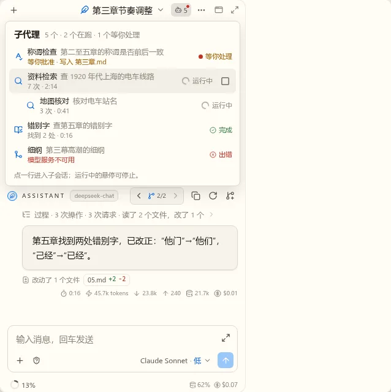
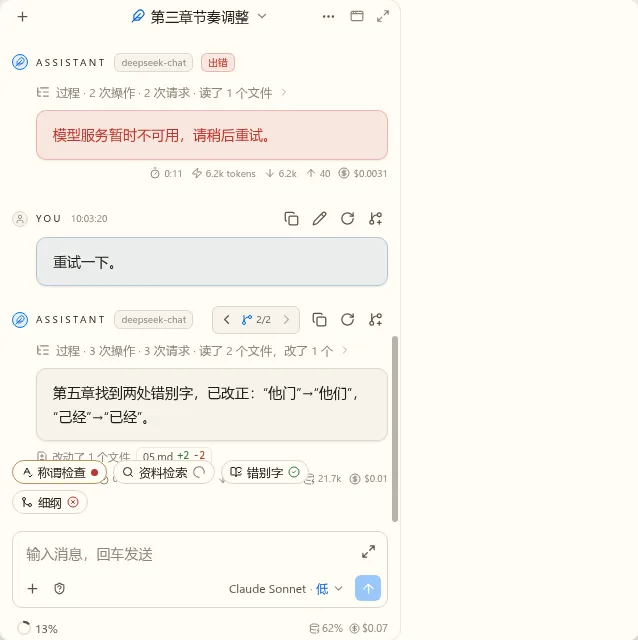
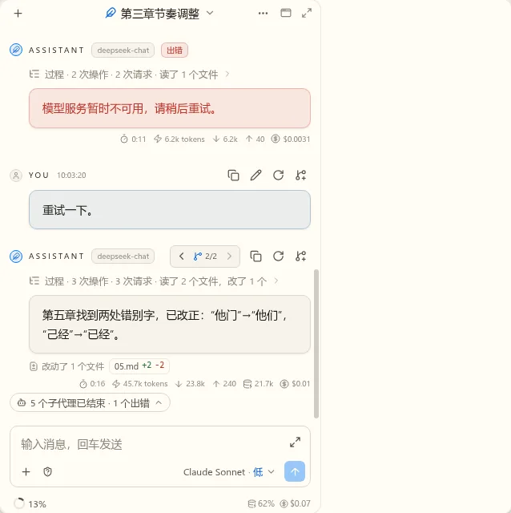

t29 第 6 轮：管理当前会话的子代理
当前会话派出的子代理放在哪里看、怎么管？
推荐 A 面板头的入口：平时只占一个小按钮（图标加个数），要你处理时有红点；点开一张浮层列出全部子代理与状态，点一行进子会话。照旧应用顶栏的“关联代理”。
A 面板头的入口与浮层

每行：子代理名与任务、最近的进度或结果、状态（等你处理、运行中、完成、出错）；孙代理缩进挂在下面。运行中的悬停出“停止”。没有子代理时入口不显示。
B 输入框上方的托盘


跑着的一眼就看到；子代理多时占两三行，挤输入框上面的空间。
- 红点：有子代理（含孙代理）在等你批准或回答，或者出错了而你还没打开过它。完成的不算。
- 等你批准的事项照旧也在父会话的停靠区里能直接批；红点只是告诉你“这里有事”。
- 列的是当前会话派出的全部子代理（不只是在跑的），按派出的先后排。
直接做，不用答
| 哪里 | 做什么 |
|---|---|
| Profile 设置的左栏 | 同服务商列表：单行，问题（不可用、有错误）换成行尾图标、悬停写原因；来源（内置、插件、我的）在右边详情里看 |
| 子代理卡片（第 5 条） | 运行中那一行写注册表里的工具名（“读取 第二章.md”），不写工具 id |
| 没选会话时的状态栏 | 不显示“0%”与“免费”：还没有用量，整行空着 |
| 删除服务商的确认框 | 不变：写明去掉几个模型、密钥一起删、哪些角色会变成未绑定 |
已定
- 删除服务商：条目悬停出删除图标，右键也能删（第 1 轮）
- 服务商条目改单行，问题换成行尾图标（第 1 轮）
- 状态栏的自定义照第 1 轮的稿做：右键勾选、设置里分左右两组排序、用量四项合成一项、提醒类总显示（第 1 轮）
- 没选会话时去掉“未选择会话”一行，第一屏照旧应用的 welcome 做：欢迎、最近对话、试试这些（第 1、2 轮）
- “试试这些”的指令由 Profile 声明，主创带三条（第 2 轮）
- 面板头不写“对话”，居中写会话：左新建、中间 Profile 图标与标题、右更多与框架按钮；没选会话时写“新对话”（第 3 轮）
- 子会话：面板头左边是返回（只有图标），中间是子代理图标与子会话标题（第 4 轮）
- 模型不可用的提示：写明是哪个角色，按钮直达对应的设置；用压在输入框上沿的浮层提示卡（第 4、5 轮）。编辑组的横幅以后也改（记进后续）
- 子代理卡片卡头整行可点：不做（第 5 轮）
- 顶栏下、输入框上的两条横线去掉，消息在顶栏下淡出（第 1 轮）
- 5 小时与 7 天限额留到做订阅登录时；缓存倒计时只给缓存时长明确的服务商（11-16）
- 状态栏用勾选与插件贡献的项，不做配一条命令（11-16）